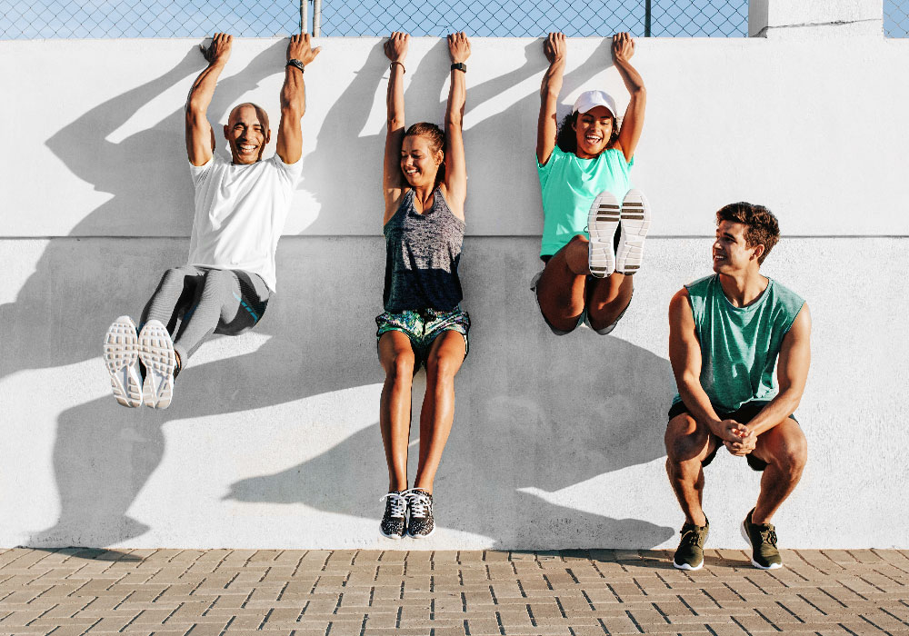

Features of this website

This website has a few functions that you may find useful.
Firstly, you can head to the 'Resources' page to see a couple workout Youtube videos. These videos are fun to follow
and a great way to get your muscles working. You can also find links to educational videos and further reading websites.
Next, you can test your knowledge over in the 'Quizzes' page and learn some more about how your body works.
In addition, you may find the database of exercises useful in the 'Exercises' page. Here you can browse or search for a
specific exercise and find out it's difficulty level and which muscle group it targets.
Lastly, you can access contact details if you want to get in touch with the YCIS PE department.